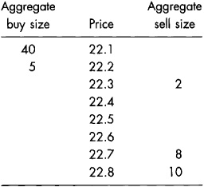
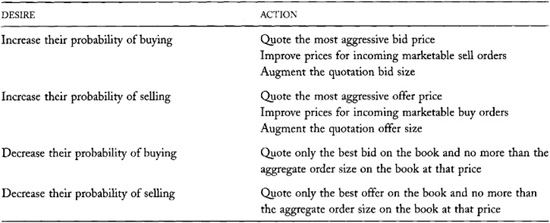
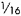
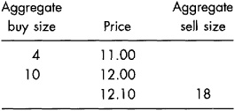
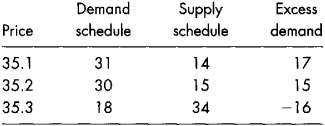

Chapter 24: Specialists
Some exchanges assign special responsibilities to members they designate as specialists. The specialists must continuously quote two-sided markets so that markets always exist in their specialties. They must also ensure that their markets are orderly and that prices do not jump too quickly.
Exchanges that designate specialists have designated primary market maker trading systems or, more simply, specialist trading systems. The largest equity exchange that designates specialists is the New York Stock Exchange.
Exchanges with specialist trading systems believe that their specialists enhance market quality and thereby attract traders to their exchanges. They believe that continuous and orderly markets increase investor confidence so that investors are more willing to invest in the exchanges' listed companies. By attracting investor interest, these exchanges encourage issuers to list their securities with them. The exchanges thereby obtain greater revenues from listing fees and transaction fees, and their members make greater profits as brokers and dealers.
In this chapter, we describe the various obligations that exchanges impose upon their specialists. We show how these obligations often require that specialists trade when they do not want to trade and refrain from trading when they do want to trade. Such obligations therefore can be quite costly to specialists. To encourage traders to accept these obligations, exchanges give specialists various trading privileges. We describe these privileges and explain how specialists profit from them. To prevent abuses of these privileges, exchanges also impose restrictions on when specialists may trade.
Although all traders appreciate the liquidity that exchanges obligate their specialists to provide, many traders resent that they have special privileges. The special privileges can be quite valuable to specialists, and hence costly to other traders. The specialist trading system therefore is the subject of regulatory controversy. Regulators must consider whether the value that specialists obtain from their privileges is commensurate with the value of the services they provide. The traders who benefit when specialists fulfill their obligations usually are not the same traders who are hurt when specialists exercise their privileges. Regulators therefore also must consider whether the resulting transfers of wealth among traders are appropriate.
You must understand the specialist trading system if you trade at exchanges that employ such systems. At such exchanges, the execution of your orders will somehow involve specialists. They may act as your broker, they may act as dealers and fill your orders for their accounts, or they may conduct the auctions in which brokers match your orders to other traders' orders. You will make better trading decisions when you understand how specialists handle your orders.
You also must understand the specialist trading system in order to understand how markets compete with each other. The liquidity services that specialists offer are public goods in the sense that everyone benefits from them. Unfortunately, public goods are hard to obtain in competitive markets. Few people will pay for them when they can freely obtain them. Regulators who value the liquidity that specialists offer must therefore carefully consider how markets compete with each other. We introduce these issues at the end of this chapter and expand upon them when we consider how markets compete with each other in chapter 26.
Finally, you must understand the specialist trading system in order to responsibly consider whether floor-based exchanges that use specialist trading systems should convert to screen-based trading systems. Although exchanges can build a screen-based specialist trading system, many issues make such a structure unlikely. Analyses of conversions to screen-based trading therefore should consider the benefits lost and the costs saved if the specialist trading system were scrapped. This chapter will help you identify these benefits and costs.
Specialist trading systems differ across exchanges. The distinguishing characteristic of these systems is that they impose obligations on dealers to supply liquidity. The obligations vary, however. Most exchanges restrict the trades that specialists can do, but some do not. This chapter provides a general discussion of the principal economic and regulatory issues that arise in connection with all designated primary market maker trading systems. These issues are common to all variants of these systems. The examples that we will consider to illustrate these principles, however, are specific to the specialist trading systems that the New York and the American Stock Exchanges use.
24.1 OVERVIEW
Specialist trading systems are found primarily at U.S. stock and options exchanges. Some markets in other countries also use them. The specialist trading system is most important at the New York and American Stock Exchanges. The U.S. regional stock exchanges also have specialist trading systems, but most regional specialists are more like third market dealers than primary stock exchange specialists. The equity options markets organized by the Chicago Board Options Exchange (CBOE), the American Stock Exchange, the Pacific Exchange, and the Philadelphia Stock Exchange also use specialist trading systems.
Specialists are known by different names in various markets. The CBOE calls its specialists designated primary market makers. The Deutsche Börse calls its specialists designated sponsors in English and Betreuers in German. At the Paris Bourse, they are known as animateurs.
Third market dealers also often call their traders "specialists." The business models of these firms often obligate their traders to offer liquidity when they otherwise might not want to do so. These obligations are voluntary, however. The dealers propose and accept them as conditions for obtaining order flow from brokers. The NASD, the SEC, and some court decisions restrict the trades that these dual traders can do. These restrictions, however, usually are not as severe as those which exchanges impose upon their specialists.
Most specialists are dual traders who sometimes broker orders for their clients and at other times fill orders for their clients from their own inventories. Exchanges that permit dual trading generally employ many regulatory safeguards to solve the resulting conflict of interest problems introduced in chapter 7. Specialists therefore are subject to many regulations.
Exchanges with specialist trading systems usually assign only one specialist to each stock or options class. We will discuss below how they make these assignments.
Some exchanges use a designated multiple market maker trading system for trading their securities. These systems are similar to specialist systems except that the exchanges obligate multiple traders to offer liquidity that they otherwise might not want to offer. These obligations are best enforced in electronic markets because traders in open outcry markets will hide when they do not want to trade. When nobody wants to trade, a computer usually assigns the obligation to trade in rotation to each of the designated market makers.
The CBOE uses a designated multiple market maker trading system for its most actively traded index options series. Unlike most specialists, their designated market makers are not dual traders. They deal only for their account, and they do not broker agency orders. Like specialists, the market makers have some obligations to provide liquidity when markets are not trading normally. Similar structures appear at some European options exchanges and at some futures exchanges.
The number of stocks or option classes that each specialist trades depends on how actively traded the instruments are. Specialists who specialize in very actively traded securities usually trade only one security or option class. Those who specialize in less frequently traded securities trade larger lists. Most specialists trade only a few securities. For example, most of the 482 individual specialists at the New York Stock Exchange trade between three and six stocks each. They usually have one actively traded security and a few less actively traded ones.
Most specialists work for firms that employ many specialists. In December 2001, only eight firms employed all specialists at the NYSE. Five of these firms handled stocks representing 95 percent of all the NYSE dollar volume.
Specialists play three roles in most markets. They are dealers when they trade for their own account. They are brokers when they broker orders and trades for other brokers. Finally, they are exchange officials who are responsible for conducting orderly markets. We consider these three main roles in the next three sections.
24.2 SPECIALISTS AS DEALERS
Specialists act as dealers when they trade for their own accounts. Exchanges greatly regulate the trading that specialists can and must do for their own accounts.
Two sets of regulations govern specialist trading. Affirmative obligations obligate specialists to offer liquidity in various circumstances. Negative obligations prevent them from trading in other circumstances. Specialists accept these obligations because they enjoy the various privileges that come with them.
24.2.1 Affirmative Obligations
The specialists' primary affirmative obligation is to ensure that a reasonable market always exists in their specialties. When no one else is willing to trade, specialists must be willing to trade. They must quote two-sided markets when no one else will, and their quotes must be meaningful in the sense that the spread between the best bid and the best offer cannot be too wide. Since specialists often must trade when no one else is willing to trade, they are the traders of last resort.
Their obligation to make markets is limited, however. Specialists do not have to make firm quotes for large block sizes, and they are not required to support prices when values are falling or restrain prices when values are rising. They simply have to ensure that public traders can always trade some meaningful quantity.
Exchanges expect that their specialists will smooth prices by intervening to prevent large price reversals. A price reversal occurs when price rises and then falls or falls and then rises. Large reversals often result when uninformed traders demand liquidity that is not present in the market. If such traders insist upon trading, they often must move prices substantially to find someone with whom to trade. Prices then jump back to their former levels when someone else demands liquidity on the other side of the market.
A market has price continuity if prices move smoothly, without jumping too much. Specialists are responsible for creating price continuity. Exchanges like price continuity because it helps assure public traders that brokers fill their agency orders fairly.
Exchanges evaluate how well specialists meet their affirmative obligations by measuring the average width of the quoted bid/ask spread, the average depth of the quotes, the number of large price reversals, and the average size of price reversals. Specialists do their jobs well when the spreads in their markets are narrow, the quoted sizes are large, large price reversals are uncommon, and price reversals are small on average.
Smoothing Jumps
An electronic order-driven market has the following limit book:

The market initially is 22.2 bid for 5; 2 offered at 22.3.
Suppose that a four-contract market buy order arrives, followed by a two-contract market sell order. The buy order will completely fill the sell order at 22.3. The remainder of the buy order will then fill two of the eight offered at 22.7. The market sell order will then fill two of the five bid at 22.2. The price will jump up from 22.3 to 22.7 and then down to 22.2.
The large reversal is due to the gap in sell orders between 22.3 and 22.7. If a specialist were in this market, she might have filled the remainder of the market buy order at 22.4. Had she done so, she could have filled the market sell order at 22.3 for a profit of 0.1 per contract.
Price Continuity and Telegraph Ticker Tapes
When telecommunication technologies were much less capable and much more expensive then they presently are, exchanges could not cheaply disseminate as much market information as they do now. For many years, most public traders did not know prevailing bid and offer prices at the time they submitted their orders. Instead, they knew only the last trade price transmitted by automated telegraph systems. Traders called these systems ticker tapes because they made ticking sounds as they printed on paper tapes.
With such limited information resources, traders could not easily determine whether they received fair trade prices. The best that they could do was check whether their trade prices were much different from the prices that immediately preceded and followed their trades. Exchanges therefore wanted to regulate price continuity to assure public traders that their orders were treated fairly.
Traders now can access much more information to determine whether their trade prices are fair. Traders are particularly interested in the quoted bid and ask prices. When dealers quote prices without knowing whether they will next trade with a buyer or a seller, they must quote fair prices. If they quote prices that are too high or too low, they risk trading with informed traders. Public traders therefore can be confident that their trade prices are fair when quotations are widely disseminated so that informed traders could take them if they wanted to trade. The width of the bid/ask spread therefore is a more important indicator of price fairness than price continuity is.
Creating price continuity is sometimes quite expensive. Specialists must trade when no one else is willing to trade. Whether these trades prove to be expensive depends on why no one else wants to trade. If no one wants to trade because informed traders believe that values are changing, specialists will trade on the losing side of the market. They will buy when prices are falling or sell when prices are rising. If no one wants to trade simply because no one is paying attention, specialist trades can be quite profitable.
Uncertainty about what prices will do in the future makes being a specialist very difficult. Consider what happens when specialists take prices down quickly because no one wants to buy in the face of strong selling pressures. If prices do not subsequently rebound, the specialists will have done a good job of finding market-clearing prices. If prices subsequently rebound, however, people may accuse them of failing to offer enough liquidity to ensure adequate continuity. This tension makes being a specialist difficult.
24.2.2 Negative Obligations
The specialists' negative obligations restrict their trading. At the New York and American Stock Exchanges, specialists are bound by exchange order precedence rules and by the principle that they should not take liquidity which would otherwise be available to public traders.
The exchange order precedence rules require that specialists yield to public orders at the same price or better. Specialists cannot trade at a given price unless no public traders are willing to trade at that price (the public order precedence rule), and no other traders are willing to trade at a better price (the price priority rule). These rules give precedence to public traders who offer liquidity over specialists.
Confirmation versus Cancellation
In floor-based markets with poor audit trails, traders sometimes say that a request to cancel a limit order is actually a request for a trade confirmation. Their experience has led them to believe that floor traders often fill their orders when presented with requests to cancel.
Limit order traders undoubtedly think that this abuse happens more often than it actually does. Long delays between the execution of an order and the receipt of the associated trade confirmation, and long delays between the submission of a request to cancel and its receipt by the specialist, ensure that specialists often may receive requests to cancel after the orders have filled. Traders then receive trade confirmations instead of their desired order cancellations. Markets can avoid these misunderstandings by ensuring that their order-routing systems, trade reporting systems, and trade confirmation systems all operate at very high speeds.
Exchanges also discourage their specialists from trading with limit orders on their books. When specialists fill standing limit orders, they take liquidity that public traders could otherwise take. Since exchanges want to preserve this liquidity for public traders, we shall call this principle the public liquidity preservation principle.
The public liquidity preservation principle also protects traders who offer limit orders. For example, suppose that a limit order trader places a limit order to sell at 50 when the market is 49.80 bid, 50 offered. If good news arrives, if the market as a whole rises, or if the prices of similar stocks rise, the limit order trader may want to cancel the order and resubmit another at a higher price. In these circumstances, however, the specialist may want to fill the order. If the specialist can fill standing orders for his own account, the limit order trader probably will not have a chance to cancel his order. The specialist will generally fill the order before the limit order trader can cancel it because specialists can see and react to changing market conditions faster than most other traders can. Moreover, if the audit trail is not perfect, a dishonest specialist may fill the order immediately after receiving the cancel instruction. In that case, the specialist will claim that the order was filled first, and he will return the cancel instruction with a trade confirmation. The public liquidity preservation principle protects limit order traders by giving them more time to change their orders in response to changing market conditions.
The negative obligations ensure that specialists can only offer liquidity, and then only if no public traders are willing to offer liquidity at the same or better prices. Specialists subject to the public liquidity preservation principle therefore can trade only with incoming marketable orders---market orders and marketable limit orders. If they want to trade ahead of public limit orders, they must offer better prices. If they want to trade at the best quoted price, they can trade only after all public orders are filled at that price.
Since the negative obligations prohibit trades that specialists might otherwise want to do, these obligations must be costly to them. Specialists subject themselves to them because the value of their special privileges more than compensates for their inability to do certain desirable trades.
Third market dealers and regional specialists generally are not subject to the public liquidity preference principle. They can fill limit orders on their books for their own accounts whenever they want. The opportunity to trade with the limit order book is especially advantageous when the market is moving quickly and limit order traders cannot quickly cancel their orders. At such times, quick traders can buy at low prices when the market is rising and sell at high prices when the market is falling. Traders say that limit orders are stale when their prices no longer reflect current market conditions.
The limit order price protection guarantees that third market dealers and regional specialists give brokers to obtain their order flows require that these dealers fill limit orders on their books under certain circumstances. Chapter 25 describes these guarantees. When markets are stable, limit order price protection can be costly to dealers because they often must buy at the ask and sell at the bid to fill agency limit orders. These obligations therefore offset to some extent the benefits of trading with stale limit orders.
Tick Size, Negative Obligations, and Specialist Participation Rates
Specialist trading is especially difficult when only one tick separates the best-priced public buy and sell limit orders. The public precedence rule prohibits specialists from buying at the best bid until all public orders at that price are filled, and the public liquidity preservation principle prohibits them from buying at the ask by trading with sell orders in their limit order books. Specialists who want to buy ahead of their booked orders therefore must wait until an incoming marketable sell order arrives and then fill it at the asking price. Likewise, specialists who want to sell ahead of their booked orders must wait until they can fill an incoming marketable buy order at the bid price.
As a rule, traders do not profit by buying at ask prices and selling at bid prices. Specialists will make these trades only when they want to speculate on future price changes or when they are very uncomfortable with their inventory positions.
A decrease in tick size relaxes the public order precedence rule by decreasing the cost of stepping in front of booked orders. When the tick size is small, so that more than one tick separates the best public bid from the best public offer, specialists who want to trade can step ahead of their books while still trading within the best bid and offer. Since these trades are less costly, they will tend to be more profitable.
The specialist participation rate is the fraction of orders that specialists fill (or partially fill) while trading as dealers. When tick sizes decreased in the United States from one-eighth dollar to one-sixteenth dollar in 1997, and to 1 penny in 2000, specialist participation rates and specialist profitability both increased substantially.
24.3 SPECIALISTS AS BROKERS
Exchange specialists often broker orders for other brokers. Specialists receive orders from brokers via exchange order-routing systems and through direct contacts.
Most exchanges maintain electronic order-routing systems that allow brokers to cheaply deliver customer orders to them. Electronic order-driven exchanges deliver these orders directly to their order-matching systems. Floor-based exchanges deliver these orders either to their specialists or to exchange officials called order book officials. In either event, the recipient then acts as the broker for these system orders. Brokers route orders through exchange order-routing systems when they do not have a presence on the exchange floor or when they do not want to tie up their floor brokers with small orders.
Exchanges regulate the commissions that specialists can charge for representing the system order flow. At the NYSE, specialists can charge commissions only on limit orders that they hold for more than five minutes. They receive no commissions for representing market orders and limit orders that fill within five minutes.
Floor brokers also often give their agency orders to specialists to manage so that they do not have to stand around waiting for traders to arrive with whom they might arrange their trades. The specialists then work these orders. This procedure allows floor brokers to handle more orders and to direct their attention to the orders that most require their skills and imme diate action. Specialists generally charge brokers commissions for these services. The brokers' clients never see these commissions.
Specialists also broker trades by acting as oral bulletin boards for other brokers. Brokers sometimes tell specialists that their clients are large buyers or sellers. The specialists then tell the brokers whether somebody else has expressed substantial interest on the other side. If somebody has, the specialist will page the other side and put the parties together. Otherwise, the specialist will promise to page the brokers if someone with interest appears. Brokers usually do not pay specialists for the trades that specialists arrange this way, but all traders value the goodwill that the specialists create.
24.4 SPECIALISTS AS AUCTIONEERS AND EXCHANGE OFFICIALS
Markets that designate specialists usually make their specialists responsible for conducting orderly markets in their specialties. The specialists ensure that all traders follow the exchange rules so that all orders are fairly represented. At markets that open with a single price auction---such as those organized at the New York and American Stock Exchanges---the specialists are responsible for conducting those auctions. To assist them, the electronic systems that maintain their limit order books also summarize the excess demand or supply at each possible auction price.
The obligation to act as an auctioneer can be costly when specialists want to direct their attention to other issues. Specialists, however, receive no direct compensation for assuming these responsibilities. Instead, they accept them in exchange for the privileges that come with being a specialist.
24.5 SPECIALIST PRIVILEGES
Specialists have several privileges that allow them to profit from their unique positions. These include access to information about order flows, the right to make decisions after others make their decisions, the ability to create the market quote, the ability to create and exercise certain look-back timing options, and the right to collect brokerage commissions from executing system order flow.
Perhaps the greatest advantage specialists have comes from their access to information about orders. Specialists see the entire system order flow as it arrives. They also see much of the order flow that floor brokers handle, either because they observe the floor brokers or because the floor brokers give them their clients' orders to work. Finally, they also see their limit order books, in which they have placed the orders that they cannot immediately execute.
Although specialists must sometimes share this information with other traders, they always have an advantage because they see it first. In markets where specialists do not have to share the information, they obviously have a greater advantage. The next several subsections provide examples of how specialists may act upon information about orders.
24.5.1 Speculative Strategies
Information about order flows may allow clever specialists to forecast shortterm price changes better than other traders can. Specialists may use this information to speculate on the side that their information favors or to refrain from offering liquidity on the other side. If they can indeed predict short-term price changes, they will be able to make more profitable trades and avoid costly trades.
TABLE 24-1.\ How Specialists Affect Their Participation Rates

To exploit their information, specialists must alter the probabilities that they will next be a buyer or a seller. The specialists' affirmative and negative obligations complicate their efforts to trade and avoid trading:
• To increase the probability that they trade, specialists must get in front of the orders on their books. They may quote more aggressive prices than their books offer and hope that their quotes attract other traders, or they may step in front of the book when an incoming market order arrives with which they want to trade.
• To decrease the probability that they trade, specialists hide behind their books. When marketable orders arrive that they do not want to fill, they match these orders with booked limit orders. They can avoid trading as long as the limit order book holds orders that are not too far from the market.
Table 24-1 summarizes the strategies that specialists use to trade and avoid trading.
24.5.2 Quote-matching Strategies
Specialists do not need to predict future price changes to profit from information in their limit order books. Their information allows them to predict what trades they may---and may not---have to make to satisfy their affirmative obligations. For example, when their books are heavy on the buy side but not on the sell side, they know that that they are somewhat protected on the buy side. Unless their market drops quickly on high volume, they will not need to provide liquidity on the buy side in the near future.
Specialists who see such asymmetries may engage in the quote-matching strategies described in chapter 11. For example, they may try to buy in front of a limit order book that is heavy on the buy side. If values subsequently rise, they will profit with the price rise. If values fall, they will not need to buy until market order sellers exhaust the liquidity on the buy side of their books. During that time, the specialists may sell their positions to any market order buyers who arrive.
The quote-matching strategy does not need to be profitable on its own to increase specialist profitability. Whenever incoming marketable orders arrive, specialists must decide whether to improve prices or to let the orders go to their books. The information they have about orders in their books allows them to make better decisions than they otherwise would make. Better decisions lead to greater profits.
The quote-matching strategy is more profitable in markets where dealers can freely trade with limit orders that they hold. In such markets, the dealers can immediately trade with their books when they want to close losing positions.
24.5.3 Cream-skimming Strategies
Specialists also can profit from knowing who wants to trade. Specialists---like all other dealers---generally will supply more liquidity to uninformed traders than to well-informed traders. Traders who offer firm orders and quotes must fill marketable orders as they arrive without regard to whose they are. In contrast, when specialist quotes simply reflect the best bids and offers in their books, specialists can decide whether they want to trade with an incoming market order after they see where it comes from. If they want to trade, they step in front of their books by improving the price.
Since small retail traders tend not to be well informed, specialists improve prices for retail traders more often than for large institutional traders. Because specialists can see the order flow before they commit to trading, they can discriminate among the different types of liquidity-demanding traders. This trading option can be very valuable.
Specialists also see the size of the incoming marketable orders before they decide to trade. They therefore can avoid the price discrimination---described in chapters 6 and 15---that large order traders try to exercise against liquidity suppliers. Accordingly, specialists are more likely to let large orders go to the book than small orders.
Traders call selective filling of orders cream skimming because the specialists take the richest orders and leave the less desirable orders for their books. Cream skimming makes limit order strategies less attractive than they otherwise would be. Since cream skimming benefits small market order traders who obtain improved prices, the practice makes market order strategies relatively more attractive than limit orders strategies for small traders.
The cost of exercising the option to step in front of the book is the minimum price increment. Specialists must improve prices by the increment to free themselves from the constraints of the public order precedence rule. When the minimum price increment is very small, specialists fill market orders that they believe will be profitable to fill, and they let their limit order books fill the market orders that they do not want.
24.5.4 Another Order Anticipation Strategy
Dealers may manipulate their trading to profit from stop orders in their books. Suppose that a dealer has a large sell order with a stop price of 20 in his book. Suppose further that no buy orders are on the book at 20 or above, and that some sell orders are in the book at 20.10. When an incoming market buy order arrives, the dealer may sell in front of the limit sell orders because he knows that he may be able to repurchase his inventory from the stop order at 20. The dealer can make this happen when a market sell order arrives by filling the order at 20, which will activate the stop sell order. If the dealer does not want to activate the stop order, he will fill the market sell order at a price above 20. The stop order allows the specialist to be a more aggressive seller than he otherwise might be because it gives him an option to easily offset his position.
An Accidental Shooting When Gunning Against a Stop Order
The SPDR (pronounced "Spider") is an exchange-traded fund that holds an S&P 500 index portfolio. (SPDR is an acronym for Standard & Poor's Depository Receipt.) It trades primarily at the American Stock Exchange under the ticker symbol SPY. A specialist manages trading in the SPDR. The specialist competes with several market makers who stand before his post. The specialist does not display his order book to the market makers.
A trustworthy source told me the following story. (The numbers in the story are all approximate, but they represent the essence of the event.)
One day in 1998 or 1999, the SPDR specialist received a very large market order to sell 500,000 shares with a stop price of 100. The SPDR was then trading at about 100½. Soon after receiving the order, the specialist aggressively sold the S&P 500 futures contract in Chicago to gun the market. The futures price fell. This fall caused other traders to sell the SPDR. These sales cleared buy limit orders priced above 100 from the SPDR order book. Soon the best bid in the SPDR was 100.
The specialist then waited for an incoming market sell order that he could fill at 100. A trade at that price would activate the 500,000-share stop order. The specialist then would buy the 500,000 shares at 100 to hedge his short futures position. Since the specialist sold the futures at higher prices (even after accounting for the normal fair-value premium), this purchase would lock in a substantial profit.
A moment before a market sell order arrived, however, one of the market makers in the crowd bid 100

for 100,000 shares. Her firm probably issued the order in an attempt to exploit the price discrepancy between the SPDR and the underlying index stocks.Price subsequently rose, and the specialist was unable to execute the stop order. He therefore lost substantially on his short futures position.
The ethics of his behavior are questionable. It appears that the specialist gunned the futures market to exploit the stop order. Such behavior would appear to violate his agency obligations to the trader who gave him the stop order. If a regulator confronted him, however, his response would have been that he believed the market was dropping, and he sold the futures so that he could give a better price to the stop order if it were activated.
24.5.5 Specialists Control the Market Quotes
At many exchanges, specialists establish the market quotes that the exchanges disseminate to the public. This privilege is most valuable at markets that publish only the best bid and offer---the top of the book---as opposed to markets that publish the entire book or a summary of the book---market by price.
At markets that publish only the best bid and offer, specialists can set these quotes however they want, within some constraints. Of course, they must honor the quotes that they set.
A Defensive Quotation Strategy
Jack is the specialist for a small stock that has the following thin limit order book:

Jack quotes the book. His market is 12.00 bid for 10 100-share lots, 18 lots offered at 12.10.
A market order to sell 2,000 shares arrives. Jack fills the first 1,000 shares of this order by matching it with the buy limit orders on his book at 12. He then fills the remainder of the order for his own account at the same price.
Jack now holds 1,000 shares that he hopes to sell at a profit. He will not profit, however, if traders decide that the stock is worth less than 12 dollars.
Jack now considers what market he should quote. His affirmative obligations prohibit him from quoting the best prices on the limit order book (11.00 to 12.10) because the spread would be too wide. At a minimum, Jack will have to supply a firm bid for his own account. He considers bidding 11.95 for 100 shares because he does not want to buy more stock. He also considers offering 1,000 shares at 12.05 because he wants to sell his inventory. He is reluctant to offer these quotes, however, because he does not want to show the weakness in the stock. He is afraid that if he lowers the price, he may panic sellers and cause buyers to wait to see what happens. Instead, he decides to leave the quote unchanged to hide the weakness. Jack hopes that a market buy order will next arrive to which he can offer an improved price of 12.09.
The main constraints on specialist quotations come from order exposure rules. These rules require that specialists expose the most aggressively priced offers to trade. They may come from orders on their books, traders on the floor, or the specialists themselves.
The order exposure rules in the U.S. equity markets require that specialists quote prices which are at least as good as the best bid and offer prices in their limit order books. The quotation sizes must be at least as large as the aggregate order sizes at the quoted prices. Floor traders also can request that specialists include their orders in the market quote.
Specialists can quote better prices or greater sizes to represent their own market-making commitments. Exchanges, however, discourage them from quoting a market for small size that hides large size offered by the public.
Within these constraints, specialists can set their quotes to influence the inferences some traders make about values. The specialists may thereby influence their order flows.
24.5.6 Stopping Stock and the Look-back Timing Option
Specialists at some exchanges can stop the execution of an incoming marketable order. When they stop an order, they guarantee that the order will eventually execute at a price that is at least as good as the best price at which the order would execute if it filled immediately. Specialists provide this guarantee by committing to execute the order for their own accounts if no one else is willing to take the other side.
Why Stopped Stock Look-back Timing Options Are Valuable
Johanna is an NYSE specialist who is quoting a market that reflects the orders on her limit order book. The market is 50 bid for 20, 27 offered at 50.10.
When an incoming limit market order to buy 10 arrives, Johanna decides to stop the order at 50.05. The NYSE requires that she then adjust her quote to reflect the stopped stock. She therefore quotes the market as 50.05 bid for 10, 27 offered at 50.10. Johanna now waits to see what happens. If no marketable sell orders arrive, she will have to fill the stopped buy order by selling from her inventory.
Suppose that while she is waiting, the prices of stocks that are similar to her stock start to rise. Johanna expects that her stock also will rise in value. She therefore does not want to sell her inventory. Instead, she waits and hopes that some other seller will arrive who will fill the stopped order and thereby relieve her of the obligation to do so. If this happens, she will not lose the opportunity to profit as prices rise.
Suppose instead that the prices of similar stocks start to fall. Johanna now fears that the value of her inventory will fall. She therefore executes the stopped order for her account. She must act quickly, before a public trader takes the option from her.
The stopped stock timing option is valuable to Johanna because she can look back to see whether prices are falling or rising when she decides whether to exercise the option. Although she ultimately may have to trade the stock when she would rather not, some other trader may arrive who will relieve her of this responsibility. The option to wait for such traders when she would rather not trade, and the option to exercise quickly when she does want to trade, make the stopped stock look-back timing option valuable.
While an order is stopped, if an incoming market order on the other side arrives, the specialist must match it with the stopped order and execute the trade. If no such orders arrive, specialists must execute stopped orders for their own accounts before the end of the trading day. Otherwise, specialists may execute stopped orders for their own account at any time they wish.
A stopped order is a trading option that specialists may exploit to their advantage. For example, when specialists stop market sell orders, they create call options. They can exercise these options as long as no market order buyers arrive first. Unlike most options, however, specialists cannot abandon them when they expire. Instead, they must then exercise them.
The stopped stock trading options is a timing option. Timing options allow people to choose when they want to do something. Stopped stock timing options are valuable because specialists can continuously decide whether they want to exercise them now or risk---or hope---that someone else will do so. Since they can decide after they have seen what has happened in the market, these options are look-back options. The specialists can look back at what has happened before they decide whether to execute them.
Specialists often stop stock to improve prices without trading when spreads are wide. They then hope that another trader will arrive on the other side who will fill the order. Such traders will also receive an improved price.
We will call such traders subsequent traders. Although specialists could make more money by filling the stopped and subsequent orders themselves at their bid and ask prices, they cannot do so when public limit orders are on their books at these prices. Since exchanges and brokers rate specialists by how often they provide price improvement, the stopped stock strategy often allows them to improve prices without trading when they could not trade profitably otherwise.
24.5.6.1 Whom Does the Stop Harm?
Since trading is a zero-sum game, someone must lose if specialists profit from creating and exercising stopped stock options. Who loses is not immediately obvious, however. The only possibilities are the traders whose orders are stopped, the subsequent traders who fill stopped orders before the specialists must fill them, and the limit order traders whose orders would have filled the stopped orders if the specialist had not stopped the stock or immediately filled the orders at improved prices. We will now consider the interests of each of these traders.
The stops do not harm the traders whose orders the specialists stop. These traders receive the same or better prices than they otherwise would have received. Since specialists guarantee their executions, they usually do not even know that their orders have been stopped. As soon as specialists stop their orders, they receive reports of their guaranteed trade prices. Retail customers then receive normal execution reports.
The subsequent traders who fill stopped orders before the specialists fill them will regret trading on average. As a rule, specialists will quickly fill their stopped orders when they believe that filling them will be profitable, and wait otherwise. Therefore, if specialists have any skill at forecasting future price changes, filling stopped orders that specialists do not want to fill should not be profitable on average.
Specialists also may be reluctant to fill stopped orders when filling them would cause already out-of-balance inventories to move further from their target values. Under such circumstances, filling their stopped orders will be harmful if their inventories are inversely correlated with future price changes, as we would expect if the specialists have been trading with informed traders.
Whether the public traders who fill stopped orders are harmed depends on whether they would have traded anyway or whether their decisions to trade were influenced by the improved prices that the specialists quote to reflect the stopped orders. If they would have traded anyway, they are no worse off than they would have been. They may even obtain better prices than they otherwise would have obtained. However, if the improved prices influenced their decisions to trade, they will regret that they traded. These traders take the specialists out of positions that the specialists do not want.
The expected costs of filling stopped orders that specialists do not want to fill are greater when the order has stood unfilled for a long time than when the order has stood unfilled for a short time. The more time that passes without the specialists filling their orders, the more likely is it that the specialists have learned information that makes them reluctant to fill such orders.
Order stopping also harms the limit order traders who would have filled the stopped orders if the specialists did not choose to stop them. Consider the position of a limit order buyer on the book at the best bid who fails to trade when a specialist stops an incoming market sell order. If the market then moves up, this limit order trader will regret not trading. Stopping stock thus harms limit order traders by decreasing their opportunities to trade profitably. In the long run, when specialists frequently stop stock, limit order trading strategies become less attractive, so that public traders submit more market orders.
24.5.7 The Market Open
Specialists conduct the opening single price auction at the NYSE. When the order flow at the open is imbalanced, as it often is, specialists step in to supply liquidity on the weak side of the market. Since this side is weak, the market-clearing price generally favors it. For example, if traders want to buy more than they want to sell at the previous closing price, the market-clearing price will be lower than the previous close, and the specialist will typically be a buyer. Prices often reverse in these circumstances, so that specialists often profit from their opening trades.
Specialists have a unique advantage at the open relative to other traders because they can see all the orders. They also have an advantage because they can decide how much they want to trade after everyone else has submitted their orders. Since their participation in the auction can determine the trade price, they have a significant advantage over other traders.
24.5.8 Brokerage Commissions
Receiving commissions for brokering orders is a valuable specialist privilege. Specialists receive and represent orders that brokers route though exchange order-routing systems. As noted above, specialists can charge brokerage commissions on some of these orders. Specialists also charge floor brokers commissions on the orders that they leave with them to work. The combined brokerage revenues can be significant.
24.5.9 Dealer Profits
The final privilege that specialists have is not uniquely theirs, but one at which they have a distinct advantage due to their unique positions. Specialists can supply liquidity to marketable orders when no one else is present. In thinly traded markets and occasionally in actively traded markets, market orders may arrive when no aggressively priced limit orders are present to supply liquidity. Specialists supply liquidity to these marketable orders by buying at the bid and selling at the offer. If their spreads are sufficiently wide, if they receive enough marketable order flow, and if the order flow is not too well informed, they will profit from filling marketable orders.
Specialists compete with other traders to supply liquidity to marketable orders. In thinly traded markets, they have an advantage over other traders because they are always at their posts. Traders who might compete with them can fill marketable orders only when they are present, either by being in the crowd or by being in the limit order book. Most floor traders, however, will not wait at a post for orders in thinly traded securities to arrive because they cannot make enough money that way. Many limit order traders likewise are reluctant to offer liquidity in thinly traded stocks because their costs of managing these orders are too high. Compared with specialists, off-floor traders do not have as much information, they cannot adjust their prices as quickly, and they cannot cream skim.
The Opening Option
The previous close was 35.2. To manage his inventory, the specialist would like to sell 16 lots at the open. Just before the specialist opens the market, the following supply and demand schedules summarize the order book:

If the specialist does not participate in the auction, the auction clearing price will be 35.3; 18 lots will trade; and there will be excess supply of 16 lots at that price.
If the specialist opens the market at 35.3, he may feel obligated to buy the 16 lots to fill the excess supply. Since the specialist does not want to buy, this option is not attractive.
If the specialist sells 16 lots, the opening price will be 35.1 and the specialist will probably sell 17 lots to ensure that all orders at 35.1 fill. If the specialist sells just 15 lots, the opening price will be 35.2. Although the specialist wants to sell 16 lots, he sells only 15 because he does not want to depress the price on his sales. The option to choose the clearing price after all other traders have submitted their orders is quite valuable.
Electronic proprietary traders use computers to create, submit, cancel, and adjust limit orders in response to changing market conditions. These traders are becoming increasingly important in markets that have fast electronic interfaces to their trading systems. As these systems grow and as more electronic information about market conditions becomes immediately available, the advantages that floor-based specialists have as dealers will diminish.
Boyd's Broken Leg
Folklore at the New York Stock Exchange holds that the first specialty started there when a man named Boyd broke his leg in 1875. Not being able to walk around the floor, he sat down on a chair on the exchange floor and announced that he would trade only Western Union, a popular stock of the time. Brokers who felt sorry for him, and brokers who valued the fact that he would not miss any trading opportunities in Western Union, left their orders with him. He thus became the first specialist by providing good service to his fellow brokers.
Source: Robert Sharp, The Lore and Legends of Wall Street (Dow Jones-Irwin, 1989), p. 139.
24.6 WHO ASSIGNS SPECIALISTS?
The specialist system originated when some traders found that they could trade more successfully if they focused their attention on a small number of stocks. Those early specialists better understood who was trading, why they were trading, and the value of what they were trading than did other traders. Their specific knowledge helped them trade more successfully as dealers. It also made them attractive to traders who needed knowledgeable brokers.
As the specialists became well known, they were able to obtain something of a natural monopoly in their specialties. The more that specialists knew about their specialties, the more effectively they could compete with others who might want to replace them. The most effective specialists were the ones who obtained the most order flow. Those who obtained the most order flow learned the most about their specialties, and thereby became more effective specialists. This circularity is an example of the order flow externality that influences market structures.
When exchanges started installing electronic order-routing systems, their specialist systems were well entrenched. Specialists naturally become the recipients of the system order flows.
In principle, specialties at most exchanges are still contestable by any exchange member who wants to specialize in a stock. In practice, it is now virtually impossible to obtain a specialty through direct head-to-head competition. The main impediment to competition is the assignment of the electronic order flow. Without that order flow, new specialists cannot successfully challenge incumbents.
Consolidation among NYSE Specialist Trading Firms
The number of firms employing NYSE specialists has decreased very substantially through mergers and acquisitions. In 1933, 230 specialist trading firms traded at the NYSE. This number shrank to 59 by 1983, and to 8 at the end of 2001.
Many factors probably explain the consolidation of specialist firms. Large, well-capitalized firms are better able to carry large inventory positions, to diversify their inventory risks, and to finance expensive information systems than are smaller firms.
Allowing newly listed issuers to pick their specialists undoubtedly has caused many small specialist firms to merge. Since issuers generally do not know much about specialists, large firms with large capital bases are more attractive to them than are small firms.
When an exchange lists a new stock or options series, the exchange asks its members to apply to be the specialist. A committee evaluates the applicants based on their prior performance and on their ability to make liquid markets in the security. The committee then chooses either the winning applicant or a set of finalists from whom the issuer chooses the winning applicant.
Exchanges periodically evaluate the performance of their specialists. They base their evaluations on objective criteria and upon subjective ratings provided by floor brokers. The objective criteria measure the width and size of quoted spreads, the frequency and size of price reversals, and price improvement rates for market orders. The floor brokers rate the specialists on various dimensions which characterize the quality of the service that the specialists provide to them and to their clients. In very rare cases, exchanges take specialties away from specialists who provide very poor service or who break exchange rules.
24.7 REGULATORY ISSUES AND PERSPECTIVES
Regulators must consider whether the value specialists obtain from their privileges is commensurate with the value of the additional liquidity they provide. If the privileges are more valuable than the additional liquidity, many traders will resent the money and profitable trading opportunities that they lose to specialists.
Given the difficulties of measuring and valuing liquidity services, regulators cannot easily find the proper balance between privileges and obligations. In practice, exchanges squeeze their specialists when specialists are making lots of money and public traders are complaining about their trading costs. Exchanges then demand more service, they further restrict specialist trades, and they limit the commissions that specialists can collect for executing system orders. Of course, the specialists scream loudly and threaten to quit if things get too bad. Since they rarely quit and since many traders want to be specialists, exchanges probably do not squeeze them too hard.
Regulators also must consider whether the distribution of the benefits and costs of the specialist system are equitable. The public traders who benefit most from the liquidity that specialists offer generally are not the traders whose trading costs increase when the specialists exercise their privileges. The beneficiaries of the specialist trading system are primarily small, uninformed market order traders who receive price improvement from specialists. Momentum traders who can quickly submit orders into rapidly rising or falling markets also benefit from the liquidity that specialists offer in order to maintain price continuity when the markets are volatile. The benefactors of the specialist system are the limit order traders in front of whose orders the specialists often step. These traders often generally do not understand the system well enough to appreciate how it increases their transaction costs. Since the beneficiaries and the benefactors generally are not the same traders, the specialist system transfers wealth from one group to another. How regulators regard these transfers often depends on which group is more able to lobby for its interests.
The beneficiaries and benefactors of the specialist system also differ by where they trade. The liquidity that specialists provide benefits all traders, regardless of whether they normally trade at the specialists' exchange or elsewhere. The benefactors of the specialist system, however, are only those traders who trade where the specialists trade.
Nasdaq's Partial Solution to the Free Rider Problem
To discourage its dealers from hiding when volatility rises, the Nasdaq Stock Market requires that they wait 20 trading days before they resume trading a stock in which they stopped making a market. Although the rule does not compel dealers to offer aggressively priced quotes, it does keep them attentive when markets are volatile.
This mismatch is problematic for specialists and for their exchanges. The profits that specialists normally make must fund the losses that they typically incur when no one else will supply liquidity. However, when trading is normal, competition from dealers in other markets reduces specialist profits. When increases in uncertainty and volatility cause liquidity suppliers to withdraw from the markets, the specialists are the only traders who remain to supply liquidity. At such times, the dealers with whom the specialists normally compete to offer liquidity may demand liquidity from them.
Exchanges can afford such generosity when their market shares are substantially greater than 50 percent. In that case, the beneficiaries and benefactors of the specialist system mostly trade at the same exchange. When their market shares are smaller, however, specialists may be unable to earn enough from their customers during normal times to fund the liquidity they provide to the entire market when no one else will. Exchanges with small market shares therefore cannot expect that their traders will provide much price continuity.
If regulators believe that markets should provide price continuity, they must somehow require that all dealers who supply liquidity in normal conditions also supply liquidity when markets are volatile. Since regulators cannot effectively prevent traders from free riding, markets with many competing dealers will not have much price continuity.
Exchanges impose capital adequacy standards on their specialists to ensure that their specialists have enough capital to conduct their businesses. The exchanges monitor these standards closely in order to identify and quickly correct problems before they affect their customers.
The capital adequacy standards also ensure that specialists will have adequate capital to provide liquidity if no one else will. Without such standards, specialists may distribute the profits that their firms make in normal markets so that they are unavailable for providing liquidity in extraordinary markets.
24.8 SUMMARY
Exchanges and third market dealers designate specialists who must supply liquidity when no liquidity would otherwise be available. Traders like continuous, liquid markets. Exchanges and dealers hope to attract customers by offering such markets.
Specialists do not willingly take these obligations upon themselves without compensation. The compensation that specialists obtain is access to order flows which allow them to earn dealing profits and brokerage commissions. Information in the order flows also allows them to speculate successfully on short-term price changes.
The profits that specialists make are transaction costs for other traders. Specialist trading is most costly to limit order traders with whom they compete to offer liquidity. Specialists harm them by selectively stepping in front of their limit orders when specialists believe the resulting trades will be profitable.
Specialists consider many factors when deciding whether to trade. They prefer to trade with small uninformed traders. They like to trade in front of the heavy side of the limit order book in order to extract order option values. If exchanges allow specialists to stop market orders, they do so to create valuable look-back timing options.
In markets that enforce public order and time precedence rules, the profitability of specialist trading strategies depends on the minimum price increment. When the increment is small, the cost to specialists of stepping in front of other traders is small.
Although traders value the liquidity that specialists offer, they do not like to pay for it if they can avoid it. Since the specialist system transfers wealth from limit order traders to market order traders, not all traders appreciate it. Regulators must therefore decide whether the liquidity supplied by specialists to some traders is worth the costs of the system to other traders.
Many traders and commentators believe that the regulatory problems associated with the specialist trading system are intractable. They believe that the special privileges which specialists enjoy allow them to take too much value from the markets, and that regulators can never adequately compel specialists to return commensurate value to the markets. These people lobby to replace the specialist trading system with a multiple designated market maker system or with a pure price-time priority screen-based trading system.
24.9 SOME POINTS TO REMEMBER
• Specialists are dual traders.
• The specialists' affirmative obligations require that they provide liquidity when no one else will.
• The specialists' negative obligations require that they refrain from providing liquidity in competition with the public.
• Specialists accept their obligations in exchange for some special privileges.
• Regulators and exchanges must balance the value of the special privileges with the value of the services that specialists provide.
• Price continuity can be expensive to provide.
• Price continuity is a public good that competitive markets generally will not provide.
24.10 QUESTIONS FOR THOUGHT
• Are specialists monopolists in their specialties? Do their unique positions give them economic power? What limits their power?
• How can exchanges enforce affirmative obligations by using a multiple designated market maker system?
• Can specialists compete with third market dealers who do not face similar obligations?
• How valuable is price continuity? How could you estimate its value?
• Who should pay for the liquidity services that specialists provide?
• Can specialists survive and thrive in electronic exchanges?
• Of what importance are quick trade confirmations when the only prices you can see are last trade prices?
• When evaluating specialists, should exchanges give more weight to price continuity or to narrow spreads?
• What effect does order stopping have on the order placement decisions that public traders make?
• What effect would an increase in the minimum price increment have on specialist profitability? How large should the minimum price increment be?
• Perhaps specialists should be required to improve prices by at least 5 cents to trade in front of their books when trading in stocks that trade on pennies. What long-run effect would such a step-ahead increment rule have on the spread between the best bid and offer in the limit order book? Should exchanges apply such a rule to all limit order traders? Should the step-ahead increment ever be different from the minimum price increment?
• How do the specialists' negative obligations help solve conflict of interest problems that arise because specialists are dual traders?
• Exchange-based U.S. equity traders use the Intermarket Trading System (ITS) to route orders from one market to another. Should exchange specialists be allowed to use the ITS to route orders for their own accounts to other exchanges? Would a prohibition on such usage prohibit specialists from trading with each other?
• Dealers who provide limit order price protection must often buy at the ask and sell at the bid. Such trades are unprofitable when the market is stable, but they can be quite profitable when the market is moving. Under what conditions do you expect that the opportunity to fill agency limit orders, coupled with the responsibility to provide limit order price protection, is profitable on net?
• Are the regulatory problems associated with specialist trading systems intractable? Should exchanges with specialist trading systems convert to other market structures?